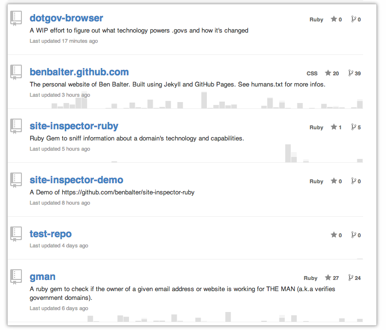

You can use our powerful search tools to find what you're looking for among the millions of repositories, users, and lines of code on GitHub.
With GitHub Search, you can type in anything you're looking for and get highlighted results that match your search criteria. You can refine your search results by clicking on one of the languages or repositories listed in the sidebar.
Under the hood, we use an ElasticSearch cluster to index your projects every time you push to GitHub. Issues and pull requests are indexed when they are created or modified.
Types of Searches
Repositories
When searching for repositories, you'll receive results for both public repositories and private repositories you have access to. Every repository result shows a participation graph in the background. This helps you scan the results for more active repositories.

For more help searching for awesome repositories, check out "Searching Repositories."
Issues
You can search for issues across all the public and private repositories you have access to. You can restrict the search results to a single organization or you can show only those issues assigned to a single user.
For more help searching for troublesome issues, check out "Searching Issues."
Code
Code search lets you explore the contents of public repositories and private repositories you can access. The results are syntax highlighted and include line numbers.
For more help searching for radical code, check out "Searching Code."
Users
When searching for users, you'll be able to hone queries based on certain parameters, such as where they live and what languages they're interested in. You can also follow users directly from those results.
For more help searching for amazing people, check out "Searching Users."
Sorting results
By default, we sort results by "best match." There are several other sort options for each specific search type that you can use instead. For example, for repositories, you can also choose to sort by the number of stars or the number of forks; for issues, you can sort by the creation or last updated date.
For a complete list of sort options, refer to the help article for each individual search type.
Potential timeouts
Some queries are computationally expensive for our search infrastructure to execute. To keep search fast for everyone, we limit how long any individual query can run. In rare situations when a query exceeds the time limit, search returns all matches that were found prior to the timeout and informs you that such a timeout happened:
Reaching a timeout does not necessarily mean that search results are incomplete. It just means that the query was discontinued before it searched through all possible data. More results might have been found, but also might not.
Limitations on query length
Because of the way search works on GitHub, there are a few limits on queries:
- Queries longer than 256 characters are not supported
- You can't construct a query using more than five
AND,OR, orNOToperators